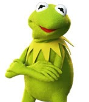

Kermit der Frosch
Hallo, ich bin Kermit der Frosch!

Kermit der Frosch studiert nicht an der OTH Regensburg. Falls Kermit aber Informatik studieren würde, wäre die OTH Regensburg bestimmt seine erste Wahl.
Über Kermit:
- Species: Muppet frog (lizard prior to 1968)
-
Gender: Male
-
Occupation: Entertainer, stage manager, show producer, director, reporter
-
Family: Robin the Frog (nephew)
-
Significant other: Miss Piggy (1976–2015)
-
Nationality: American
-
(Quelle: Wikipedia - Kermit the Frog)